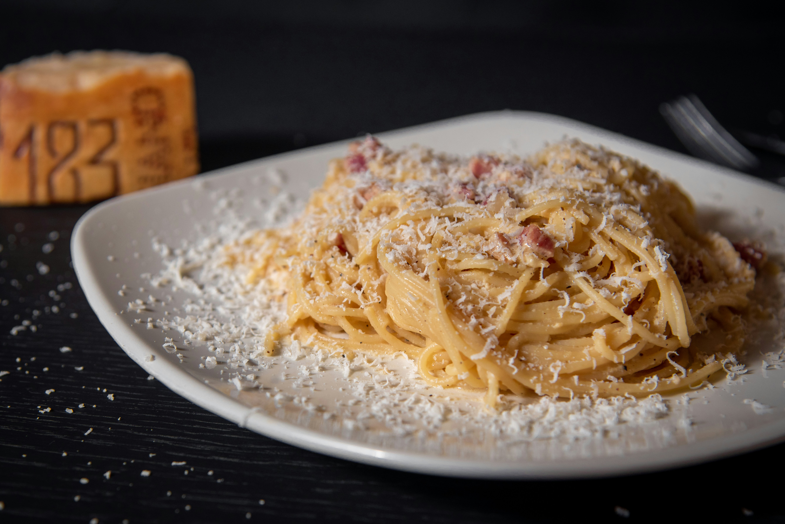

Foto von Zoran Borojevic auf Unsplash
Ingredients:
- 400 g spaghetti
- 150 g guanciale (or pancetta), cut into small strips
- 4 large egg yolks + 1 whole egg
- 80 g Pecorino Romano, finely grated (plus extra for serving)
- 1 tsp freshly cracked black pepper, plus more to taste
- Salt (for the pasta water only)
Steps:
- Bring a large pot of lightly salted water to a boil (go easy on the salt, as the cheese and guanciale are already salty).
- Bring a large pot of lightly salted water to a boil (go easy on the salt, as the cheese and guanciale are already salty).
- Cook the guanciale in a large, cold skillet over medium heat until the fat renders out and the pieces turn golden and crisp. Remove the pan from the heat.
- Cook the spaghetti until al dente. Reserve about 1 cup of the starchy pasta water before draining.
- Transfer the hot pasta directly into the skillet with the guanciale (off the heat!) and toss to coat in the rendered fat.
- Pour the egg-and-cheese mixture over the pasta along with a splash of warm pasta water, tossing rapidly so the residual heat creates a glossy, creamy sauce without scrambling the eggs. Add a little more pasta water if needed and serve immediately with extra Pecorino and pepper.